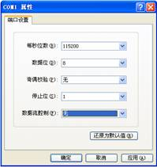
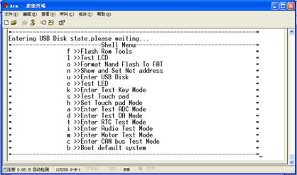

ITEEDU
超级终端设置及BIOS功能使用
1．运行Windows系统下的超级终端（HyperTerminal）应用程序，新建一个通信终端。如果要求输入区号、电话号码等信息，可随意输入，出现如图1-32所示对话框时，为所建超级终端取名为arm，可以为其选一个图标。单击“确定”按钮。
2．在接下来的对话框中选择ARM开发平台实际连接的PC机串口（如COM1），单击“确定”按钮后出现如图1-33所示的属性对话框。在其中设置通信的格式和协议，这里波特率为115200，数据位为8，无奇偶校验，停止位为1，无数据流控制。单击“确定”按钮完成设置。
 图1-32 创建超级终端
图1-32 创建超级终端
图1-33 设置串行口
3．完成新建超级终端的设置以后，可以选择超级终端文件菜单中的保存，将当前设置保存为一个特定超级终端在桌面上，以备后用。用串口线将PC机串口和平台UART0正确连接后，就可以在超级终端上看到程序输出的信息了，比如本实验的“Hello world！”。
4．启动开发板，按住开发板上键盘的任意按键，使开发板进入BIOS设置状态，如 图1-34所示。
 图1-34 系统的BIOS设置程序
图1-34 系统的BIOS设置程序
5．该画面上提示了BIOS的版本等信息。Shell Menu是平台的检测菜单，每个条目的最左边字母是该功能的快捷键，按PC机键盘相应键将执行对应功能。注意操作时保持超级终端处于激活状态，并且PC机键盘必须为小写状态。
6．用户可以按超级终端的提示尝试部分测试功能。
（1）l：测试LCD的文本和图形显示。执行该命令后LCD上会出现文本提示，然后进入图形模式并显示一幅彩色条形图案，接着在超级终端上根据提示按任意键返回文本模式，并退出LCD测试返回测试菜单。
（2）o：格式化开发平台的16MB Flash，其中的文件将丢失，需要重新备份。执行该命令后超级终端上会出现确认提示，如果按y键则会格式化Flash，最后返回菜单。
（3）n ：设置开发平台网卡的IP地址、子网掩码等，其下有子菜单。
p：设置MAC地址，执行该命令后按提示操作。
i：设置IP地址，执行该命令后按提示操作，并与所在局域网在同一网段。
m：设置子网掩码，执行该命令后按提示操作。
g：设置网关的IP地址，执行该命令后按提示操作。
s：保存所设地址，设置完IP地址等，必须执行该命令保存设置，否则设置无效。
d：设置默认地址。
q：退出子菜单，返回到主菜单。
（4）u：激活开发平台的USB连接，开发平台的Flash可以作为U盘使用，从而可以方便地将字库和应用程序等文件从PC机复制到平台的Flash中。使用此功能时，必须保证USB电缆正确连接。
（5）e：测试由ZLG7289驱动的LED显示，共分3步，按照超级终端提示按任意键继续，同时观察LED的变化，最后返回主菜单。
（6）k：测试由ZLG7289控制的键盘扫描，执行该命令后按开发平台的键盘，看超级终端的键名显示，而在超级终端上按PC键盘任意键则退出测试返回菜单。
（7）s：测试开发平台触摸屏，触摸屏有动作时在超级终端上会显示动作类型和坐标。按PC键盘任意键后，再单击一下触摸屏即可退出测试并返回主菜单。
（8）h：设置触摸屏的坐标基准点，也就是校屏功能。需要按提示单击触摸屏的3个位置并保存结果。
（9）a：测试开发平台的AD电路，执行该命令后调节平台的4个电位器，在超级终端上显示AD0～AD3的数值。按PC键盘任意键退出测试并返回。
（10）d：测试开发平台的DA电路，在超级终端显示电压值，需要用电压表测量平台DA输出端子。按PC键盘任意键退出测试并返回。
（11）t：设置开发平台的RTC时间参数，该时间由开发平台上的钮扣电池保证持续计时。按提示确认修改时间并分别输入时间，设置完成后需要保存，否则设置参数无效。
（12）i：测试平台的音频电路，执行该命令后可以听到一段从平台扬声器发出的音乐。应适当调节音量电位器。
（13）m：测试平台的两个电机，需要打开电机附近的电机电源开关，按提示分别测试直流电机和步进电机。
（14）c：测试平台的CAN控制器。执行该命令在超级终端显示CAN控制器ID，正常应该显示1234或0000。
（15）b：引导Flash中的应用程序system.bin。执行该功能将退出BIOS状态，把控制交给应用程序。
7．按PC键盘的u键（要使超级终端处于活动状态），这时超级终端上会显示如图1-35所示的信息。
图1-35 进入U盘状态
8．这时，在“我的电脑”中可以发现多了一个“可移动磁盘”，这就是开发板的海量存储器16MB非线性Flash。开发平台的Flash芯片就像一个U盘，可以通过“我的电脑”进行操作。可以把编译后生成的system.bin文件通过USB下载到嵌入式开发板中，复位系统，运行并检查输出结果。
提示：system.bin文件是系统通过BIOS引导以后，装入内存中运行的默认文件名。所以上文中对工程的设置都使用该文件名作为编译最终文件。SDT环境中，system.bin文件产生在工程路径下的Debug和Release目录下；ADS环境中，该文件产生在工程路径下的ProjectName_Data\Debug和Release目录下。建议将Release下的system.bin文件复制到U盘。